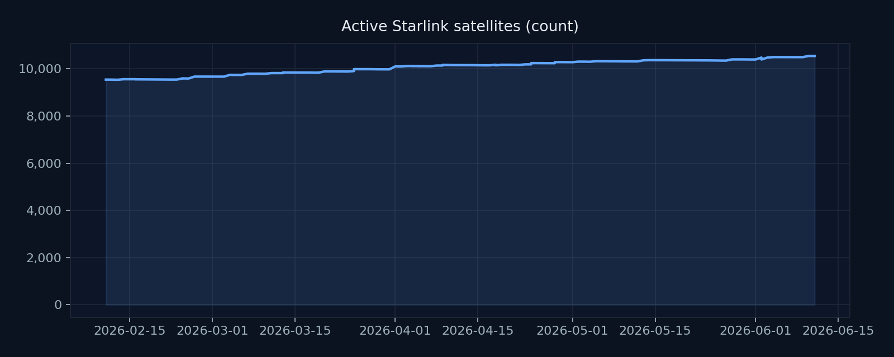
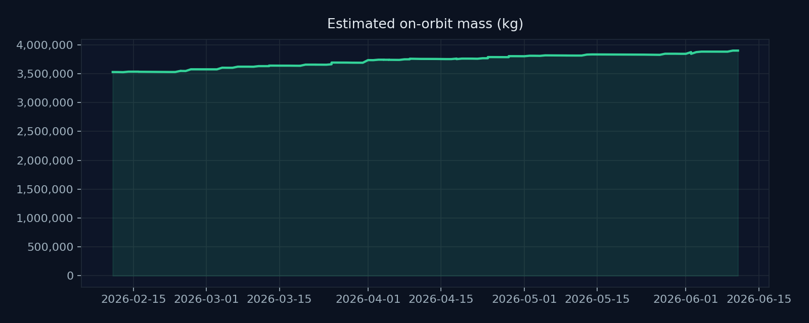
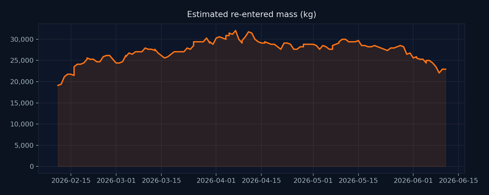
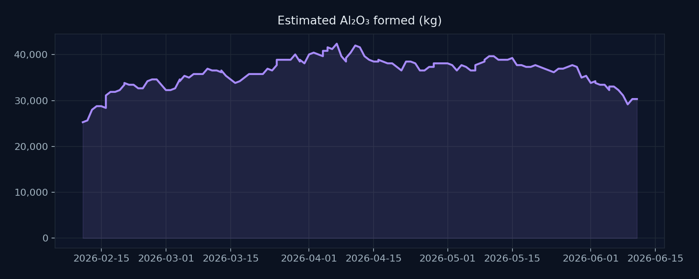

Environmental
No changeNo Starlink-specific changes detected...




Mass mix and assumptions editable in data/starlink_config.yml. Charts regenerate on each run.
No Starlink-specific changes detected...
A former Ukrainian defense official has urged SpaceX to implement stricter controls on Starlink terminals to prevent their use by Russian forces, highlighting concerns over third-party access.
No Starlink-specific changes detected...
Quiet days are logged explicitly to preserve an auditable history of checks.
Three classes of risk where a constellation the size of Starlink can generate outsized systemic effects:
data/starlink_config.yml; aluminum fraction × 1.89 kg Al₂O₃ per kg Al (upper-bound stoichiometry).Cyber: CERT/CC and national CERT advisories, vendor bulletins, and threat-intelligence publications scoped to Starlink hardware, firmware, and infrastructure. Astronomical: optical streak reports, RFI notes, and observatory mitigation updates from survey science publications.
Each digest date is recorded even with no new developments — it provides a continuous audit trail, distinguishes genuine low-activity periods from monitoring gaps, and supports future trend analysis.
All assumptions and mass-mix parameters are editable in data/starlink_config.yml.
Consolidated record of notable Starlink-related environmental, cybersecurity, and astronomical items, drawn from the per-domain archive files.
Dates refer to publication or data-release dates of the cited sources.
Includes terminal/dish vulnerabilities, network/ground incidents, advisories, and notable policy actions related to Starlink.
Optical streak contamination, radio‑frequency interference, mitigation updates (coatings/visors/orbit), survey impacts, and notable “satellite train” visibility items.